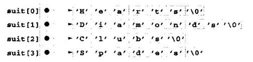

C++中指针与数组关系密切，几乎可以互换使用。数组名可以看成常量指针，指针可以进行任何有关数组下标的操作。
操作数组时用数组符号而用指针符号。尽管程序编译时间可能稍长一些．但程序更加清晰。
假设声明了整数数组b[ 5 ]和整数指针变量bPtr。由于数组名(不带下标)是数组第一个元素的指针．因此可以用下列语句将bPtr设置为b数组第一个元素的地址：
bPtr = b；
这等于取数组第一个元素的地址，如下所示：
bPtr= &b[ O ]；
数组元素b[3]也可以用指针表达式引用：
*( bPtr + 3 )
上述表达式中的3是指针的偏移量(offset)。指针指向数组开头时，偏移量表示要引用的数组元素，偏移量值等于数组下标。上述符号称为指针/偏移量符号(pointer／offset notation)。括号是必需的，因为*的优先顺序高于+的优先顺序。如果没有括号，则上述表达式将表达式*bPtr的值加上3(即3加到b[0]中，假设bPtr指向数组开头)。就像数组元素可以用指针表达式引用一样，下列地址：
&b[ 3 ]
可以写成指针表达式：
bPtr + 3
数组本身可以当作指针并在指针算法中使用。例如，下列表达式：
*( b + 3)
同样引用数组元素b[3]。一般来说，所有带下标的数组表达式都可以写成指针加偏移量，这时使 用指针／偏移量符号，用数组名作为指针。注意，上述语句不修改数组名，b还是指向数组中第一个元素指针和数组一样可以加下标。例如，下列表达式：
bPtr[ 1 ]
指数组元素b[1]．这个表达式称为指针／下标符号(pointer／subscript notation)。
记住，数组名实际上是个常量指针，总是指向数组开头。因此下列表达式：
b += 3
是无效的，因为该表达式试图用指针算法修改数组名的值。
尽管数组是指向数组开头的S针，而指针可以在算术表达式中修改，但数组名不可以在算术表达式中修改，囚为数组名实际上是个常量指针。
图5. 20的程序用我们介绍的四种方法引用数组元素(数组下标、用数组名作为指针的指针／偏移量符号、指针下标和指针的指针／偏移量符号，打印数组的的4个元素)。
要演示数组和指针的互换性，还可以看看程序5．21中的两个字符串复制函数copy1和copy2。
这两个函数都是将字符串复制到字符数组中。比较copy1和copy2的函数原型可以发现，函数基本相同(由于数组和指针具有互换性)。这些函数完成相同的任务，但用不同方法实现。
// Fig. 5.20: f~g05_20.cpp
// Using subscripting and pointer notations with arrays
#include < iostream.h>
int main()
{
int b[] = { 10, 20, 30, 40 } ;
int *bPtr = b; // set bPtr to point to array b
cout << "Array b printed with:\n"
<< "Array subscript notation\n";
for(int i = 0; i < 4; i++ ),
cou << "b[ " << i << "] = << b[ i ] << '\n';
cout << "\nPointer/offset notation where\n"
<< "the pointer is the array name\n";
for (int offset = 0; offset < 4; offset++ )
cout << "* (b +" << offset << ") ="
<< *( b + offset ) << '\n';
cout << "\nPointer subscript notation\n";
for ( i = 0; i < 4; i++ )
cout << "bPtr[" << i << "] =" << bPtr[ i ] << '\n';
cout << "\nPointer/offset notation\n";
for ( offset = 0; offset < 4; offset++ )
cout << "*(bPtr + "<< offset << ") ="
<< * ( bPtr + offset ) << '\ n';
return 0;
输出结果：
Array b Printed with:
Array subscript notation
Pointer/offset notation where
the pointer is the array name
* (b + 0) = 10
* (b + 1) = 20
* (b + 2) = 30
* (b + 3) = 40Pointer subscript notation
bPtr[ 0 ] = 10
bPtr[ 1 ] = 20
bPtr[ 2 ] = 30
bPtr{ 3 ] = 40Pointer/offset notation
*(bPtr + 0) = 10
*(bPtr + 1) = 20
*(bPtr + 2) = 30
*(bPtr + 2) = 40图5．20 用我们介绍的四种方法引用数组元素
// Fig. 5.21: figOS_21.cpp // Copying a string using array notation // and pointer notation. #includevoid copy1( char *, const char * ); void copy2( char *, const char * ); int main() { string3[ 10 ], string4[] = "Good Bye"; copy1( string1, string2 ); cout << "string1 =" << string1 << endl; copy2( string3, string4 ); cout << "string3 = "<< string3 << endl'; return 0; } // copy s2 to sl using array notation void copy1( char *s1, const char *s2 ) { for ( int i = 0; ( s1[ i ] = s2[ i ] ) != '\0'; i++ ) ; // do nothing in body } // copy s2 to sl using pointer notation void copy2( char *s1, const char *s2 ) { for ( ; ( *s1 = *s2 ) != '\0'; s1++, s2++ ) ; // do nothing in body }
输出结果:
string1 = Hello
string3 = Good Bye图5．21 使用数组和指针符号复制字符串
函数copy1用数组下标符号将s2中的字符串复制到字符数组s1中。函数声明一个作为数组下标的整型计数器变量i。for结构的首部进行整个复制操作，而for结构体本身是个空结构。首部中指定i初始化为0，并在每次循环时加1。for的条件“(s1[i]=s2[i])!='\0',从s2向s1一次一个字符地进行复制操作。遇到s2中的null终止符时，将其赋给s1，循环终止，因为null终止符等于'\0'。
记住．赋值语句的值是赋给左边参数的值。
函数copy2用指针和指针算法将s2中的字符串复制到s1字符数组。同样是在for结构的首部进行整个复制操作．首部没有任何变量初始化。和copy1中一样，条件(*s1=*s1)!='\0'进行复制操作。
复引用指针s2，产生的字符赋给复引用的指针s1。进行条件中的赋值之后，指针分别移到指向s1数组的下一个元素和字符串s2的下一个字符。遇到s2中的null终止符时，将其赋给s1，循环终止。
注意copy1和copy2的第一个参数应当是足够大的数组，应能放下第二个参数中的字符串，否则可能会在写人数组边界以外的内存地址时发生错误。另外，注意每个函数中的第二个参数声明为const char*(常量字符串)。在两个函数中，第二个参数都复制到第一个参数，一次一个地从第二个参数复制字符，但不对字符做任何修改。因此，第二个参数声明为常量值的指针，实施最低权限原则。两个函数都不需要修改第二个参数，因此不向这两个函数提供修改第二个参数的功能。数组可以包含指针，这种数据结构的常见用法是构成字符串数组，通常称为字符串数组(stringarray)。字符串数组中的每项都是字符串，但在C++中，字符串实际上是第一个字符的指针。因此，字符串数组中的每项实际上是字符串中第一个字符的指针。下列字符串数组suit的声明可以表示一副牌：
char‘*suit[ 4 ] = { "Hearts"，"Diamonds"，"Clubs"，"Spades"}；
声明的suit[4]部分表示4个元素的数组。声明的char*部分表示数组suit的每个元素是char类型的指针。数组中的4个值为”Hearts'’、”Diamonds”、”Clubs”和”Spades”。每个值在内存中存放成比引号中的字符数多一个字符的null终上字符串。4个字符串长度分别为7、9、6、7。尽管这些字符串好像是放在suil数组中，其实数组中只存放指针(如图5．22)。每个指针指向对应字符串中的第一个字符。这样，尽管：suit数组是定长的，但可以访问任意长度的字符串，这是C++强大的数据结构功能所带来的灵活性。

suit字符串可以放在双下标数组中，每一行表示一个suit，每一列表示suit名的第一个字符、这种数据结构每一行应有固定列数，能够放下最长的字符串。因此，存放大量字符串而大部分字符串长度均比最长字符串短许多时，可能浪费很多内存空间。我们将在下一节用字符串数组帮助整理一副牌。